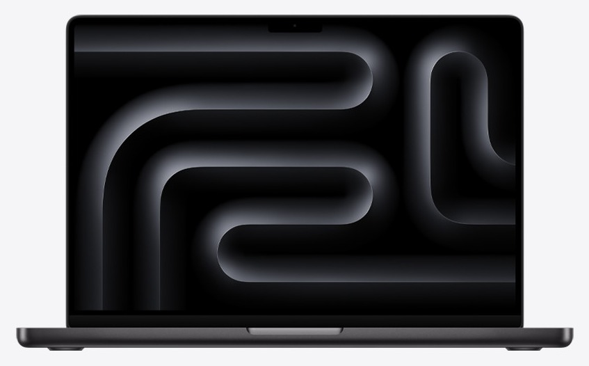
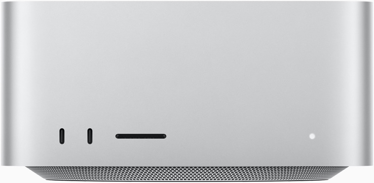

Veel organisaties werken met gevoelige data. Klantgegevens, contracten, financiele stukken en interne communicatie mogen niet naar de cloud. Toch vereisen de meeste AI-oplossingen precies dat.
Tegelijkertijd groeit de kloof tussen wat AI kan en wat er binnen organisaties wordt begrepen en toegepast. De angst voor verkeerd gebruik remt adoptie. En de IT-consultants die wél iets bouwen? Die vertrekken weer. De kennis verdwijnt mee.
Stel u voor: dezelfde AI-kracht als ChatGPT, maar dan volledig binnen uw eigen organisatie. Geen data die het pand verlaat. Geen abonnement bij een Amerikaans techbedrijf. Gewoon uw eigen intelligentie, onder uw eigen dak.
Alles wat u met ChatGPT, Claude of Copilot doet. Maar dan op uw eigen hardware, zonder dat een document uw kantoor verlaat.
Een eigen chat-interface, op desktop en mobiel. Alleen toegankelijk voor uw medewerkers, volledig afgeschermd van het internet.
Van het samenvatten van documenten tot het analyseren van dossiers. Sneller dan zoeken, slimmer dan Ctrl+F.
Upload uw documenten en maak ze doorzoekbaar met AI. Contracten, procedures, handleidingen. Uw AI kent uw organisatie.
Automatiseer repetitieve taken. Van rapportages tot meldingen classificeren. Agents werken door zodat u dat niet hoeft.
Bouw eenvoudig interne tools zonder programmeur. Van formulierverwerking tot rapportgeneratie, met AI als bouwpartner.
Koppel de AI aan uw bestaande systemen. Wij zorgen dat het past binnen uw IT-landschap, niet ernaast.
| Reckers.AI | Cloud AI | |
|---|---|---|
| Privacy | Data verlaat nooit uw pand | Data gaat naar externe servers |
| Kosten | Eenmalige hardware, open-source software | Doorlopende licentiekosten per gebruiker |
| Eigenaarschap | U bent eigenaar van alles | Vendor bepaalt voorwaarden |
| Compliance | Volledig onder eigen beheer | Complex bij BIO, AVG, beroepsgeheim |
| Offline | Werkt zonder internet | Vereist internetverbinding |
| Toekomst | Open source, altijd het nieuwste model | Afhankelijk van leverancier |
Apple hardware, open-source AI. U schaft de hardware zelf aan. Wij installeren, configureren en onderhouden de volledige AI-stack.

M5 Max · 128 GB unified
Solo · 1 gebruiker · ~80% AI-niveau
Vanaf € 6.400

M5 Max / Ultra · 128–512 GB
Team & Office · 2–15 gebruikers
Vanaf € 4.500
4× M5 Ultra · tot ~2 TB unified
Scale · 15+ gebruikers · ~98% AI-niveau
Vanaf € 9.000
| Schaal | Hardware | Geheugen | AI-niveau | Gebruikers | Richtprijs |
|---|---|---|---|---|---|
| Solo | MacBook Pro M5 Max | 128 GB | ~80% | 1 | € 6.400 |
| Team | Mac Studio M5 Max | 128 GB | ~80% | 2–5 | € 4.500 |
| Office | Mac Studio M5 Ultra | 256 GB | ~93% | 5–15 | € 7.500 |
| Scale | Mac Studio cluster | Tot ~2 TB | ~98% | 15+ | € 9.000–30.000 |
AI-niveau als percentage van de kwaliteit van de beste cloudmodellen. Bij 80% merkt u in de praktijk weinig verschil. Bij 93%+ is het verschil verwaarloosbaar.
Open-source AI-modellen verbeteren elke maand. Wat vandaag 80% scoort, scoort over een half jaar 90%. Op dezelfde hardware. U investeert één keer en profiteert jarenlang.
U betaalt naar wat het oplevert.
Reckers.AI is geen softwarebedrijf maar een kennisbedrijf. Wij selecteren de beste open-source tools, installeren ze op uw hardware, leiden uw interne pioniers op, en zorgen via een abonnement voor doorlopende orkestratie en updates.
Voor 25% van de minimale toegevoegde FTE geniet u van 16 jaar ervaring in procesautomatisering en agentic AI.
Rekenmodel: 1 FTE = ca. € 70.000/jaar (€ 5.830/mnd). Uw tarief is 25% van de toegevoegde FTE-waarde (5% onderhoud + 20% orkestratie).
Maandelijkse check, updates, backups en beveiliging. Alles draait, staat netjes en niets lekt.
Wij bouwen en verbeteren agents die taken uitvoeren en FTE besparen. Iedere maand beter, inbegrepen in de prijs.
Setup bij onderhoud: € 125/uur. Bij orkestratie: gratis.
Alle prijzen excl. BTW.
Benieuwd wat lokale AI voor uw organisatie kan betekenen? In een kort gesprek breng ik uw situatie in kaart. Past het? Dan volgt een live demo op de hardware die bij u past. Geen verkooppraatje, geen PowerPoint. Gewoon een werkend systeem op tafel.
Gesprek plannen